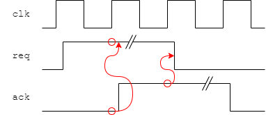

This depicts a typical RTL development flow. Source code is developed
(possibly also as schematic diagrams although this is currently
decreasing in popularity), then processed and simulated with some form
of testbench/stimulus. The output can typically be viewed as traces
with (selected) signals vs. time and potential problems can (perhaps)
be spotted. Additionally the simulator may produce output which can
be compared with expected independently generated results,
either by the testbench or using some external application.
Feedback is used to correct the design, sometimes also the testbench
and even (occasionally) the expectation if an earlier mistake has
escaped notice†.
To verify that the RTL description fulfils all the logical operations required of the system.
You develop (a piece of) a system. It has to perform a certain set of functions and fit the appropriate set of interfaces. To do this a set of tests are required.
Some tests may already exist:
You provide:
You can collect:
If any of the above criteria fail later then the RTL will need redesigning.
Any editing may change (break) the functionality, so retesting (‘regression’) is important.
Intention: reduce the number of redesign cycles to a minimum. Experience helps with this – but is not a sure guide.
†Shouldn't happen but we're all human.
Objective is to verify the logic behaviour of the design.
Try to exercise every function.
Functional simulation – which you should be familiar with – is a test of the logic operation of a design. Higher level models should have shown that the algorithm can work; now the implementation must be verified.
Functional simulation is (primarily) a digital, event-driven simulation. This allows the simulators to run quite quickly which, in turn, allows a lot of test patterns to be exercised in a sensible elapsed time.
Simulation (of a synchronous design) at this level will be cycle accurate so the number of clock pulses taken can be counted. This gives a better ‘feel’ for the timing of a function. This may allow some redundant cycles to be identified and eliminated. If the design has a constrained clock speed then accurate performance estimates are possible, assuming the target clock speed can be achieved.
What this form of simulation doesn't give directly is any assurance that a particular clock frequency can be achieved by the synthesized logic. Delays can be included in the simulation but, in the first instance, these are simple estimates. Later, when the design has been developed further, more realistic delays can be extracted from the synthesized circuit and back-annotated to improve the realism of the simulation.
However, typically, a few test patterns are able to show timing problems. The main value of functional simulation is to provide good test coverage of the logical design.
To avoid the simulation ‘running away’, a statement like:
initial #10000 $stop;
can halt a simulation after a time limit.
Example: a handshake signal:
(Note: the protocol shown here is not quite the same as used in the lab.)
The test block needs to provide ‘req’ which interacts with ‘ack’.
One way: work out in advance (by hand?) the expected response times of the ‘ack’ signal and drive ‘req’ accordingly.
Another way — use the language to respond to the test block.
…
while (ack == 1) @ (posedge clk); // AAA
req <= 1;
while (ack == 0) @ (posedge clk); // BBB
req <= 0;
…
This:
The details of such a handshake can be ‘hidden’ in a task.
initial // Input handshake
begin
req_in <= 0;
@ (posedge clk);
req_in <= 1;
while (ack_in == 0) @ (posedge clk);
req_in <= 0;
while (ack_in == 1) @ (posedge clk);
repeat (10) @ (posedge clk); // Pause before continuing
...
end
initial // Output handshake
begin
ack_out <= 0;
while (req_out == 0) @ (posedge clk);
repeat (2) @ (posedge clk); // Choose to insert extra delay
ack_out <= 1;
while (req_out == 1) @ (posedge clk);
ack_out <= 0;
...
end
This is an illustrative example. A real test would continue, for
example stalling in different phases, trying to overfill the FIFO etc.
There would probably be some data carried through (and tested for
correctness) too!
A good verification test will subject the Device Under Test to
examples of any situation it might legitimately experience in
operation.
Be vicious! Try and break it!
Note: it is convenient (but not compulsory) to use independent
blocks (threads) at the input and output. This allows freedom of
timing so that (for example) if the latency of the FIFO is
changed the test will still work.
In the example above the output acknowledgement has been arbitrarily
delayed; a thorough test might use a range of delays (including none)
– for example using a random value.
if (Boolean_expression) statement_1 {else statement_2}
‘if’ has several uses:
It may take an
else clause.
Note: In synthesizable, combinatorial logic the
else may
be wanted to avoid creating a latch, inadvertently.
repeat (100)
begin
@ (posedge clk)
if (req) ack <= 1;
else ack <= 0;
end
while (Boolean_expression) statement
for (addr = 0; addr < 1024; addr = addr + 1) statement
forever statement
To stop a simulation due to an error, try:
event failed;
...
always @ (failed) #100 $stop;
...
...
if (<error condition>) -> failed;
If you haven't met Verilog events yet, keep reading.
‘while’ functions much as you would expect. It is not synthesizeable.
...
@ (posedge clk) req <= #1 1;
@ (posedge clk); // Wait at least one cycle†
while (ack != 1) @ (posedge clk); // Wait for response
req <= #1 0;
... // May not care about
... // completing handshake immediately
while (ack != 0) @ (posedge clk); // Wait for response
...
† Only needed if ack is/may be driven combinatorially and could rise immediately. Good practice would have a flip-flop between, so this cycle would take place inside the while.
Request is asserted and given time to be seen.
If there is no acknowledgement, insert another clock cycle (and try again).
Continue waiting until the acknowledgement appears.
Probably go and do something else for a while.
(Before next handshake) test if acknowledgement removed and wait until it is.
‘repeat ()’ is a simple loop which iterates the following statement a number of times.
‘for’
has C-like function and syntax although the
“i++”
syntax is not implemented in basic Verilog.
(The latter is present in SystemVerilog.)
Back (up) to simulation
Forward to parallelism in simulation